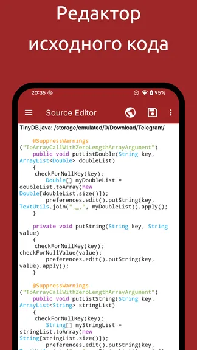
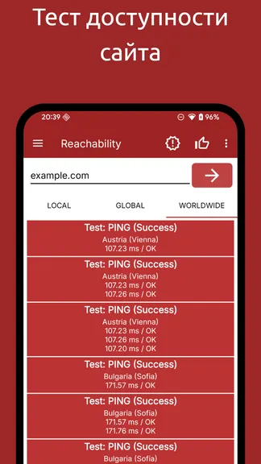
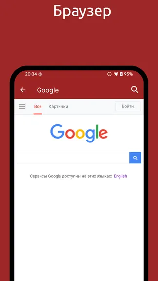

WebTools 横向盘点：把运维工具箱塞进手机里
从网络诊断到 SSH 终端、从 FTP 管理到代码高亮，WebTools 一个应用覆盖了远程运维的大半场景。这篇盘点把它的能力面完整铺开。
如果把日常运维和远程服务器管理的常用操作列个清单——测网速、Ping 一下、SSH 登录、传文件、改配置、调接口——你会发现每一项在电脑上都有专门工具。那出门在外怎么办？WebTools 做的事，就是把这些分散的能力打包进一个 Android 应用，让手机变成可以随手掏出来用的运维瑞士军刀，下载安装后就能上手。
这不是那种"凑几个工具图标进去"的轻量级合集。从它的官网和文档的组织方式就能看出来，它的功能按网络诊断、接口调试、远程文件、服务器交互、代码与配置几个维度分层，每个模块都不是玩具：Ping 带延迟统计和丢包率、SSH 终端支持密钥认证和自定义端口、FTP/SFTP 文件管理器能直接在线改代码并自动上传。下面就按能力域逐一盘点它到底能做到什么程度。
网络诊断：先搞清楚链路通不通
远程运维遇到问题时，第一个动作通常不是登录服务器，而是先确认链路状态。WebTools 把这一步做得相当完整。
可达性检查就是 Ping，按 IP 或域名发 ICMP 包，统计丢包率、延迟的最小/平均/最大值、TTL 跳数这些关键指标。很多云服务器会主动屏蔽 ICMP 包，Ping 超时不一定代表服务器下线——WebTools 的中文文档里明确标注了这一点，还给出了和 Telnet 配合使用的建议，测具体端口是否开放更靠谱。这种"告诉你这个功能的边界在哪里"的写法，是它和那些只说"点一下就能测"的同类工具最大的区别。
网速测试走的是另一条线：测量手机当前网络的上下行速率和延迟。这个功能的实际价值不在"我家宽带多少兆"，而在外远程运维前先摸清楚当前移动网络的质量——延迟超过 200ms 的话，SSH 终端的输入会明显卡顿，执行长命令前最好换个网络。测速结果还可以多次跑、对比波动幅度，用来判断某条链路是不是稳定。
Telnet 连通性是补上面两个的缺口：Ping 被禁但端口能连 = 服务在跑；端口也连不上 = 要么防火墙拦了要么服务挂了。三个工具配合起来，十几秒内就能把"链路问题还是服务问题"这个二分判断做完。

服务器交互：SSH 终端和文件管理器
链路通了之后，最常用的就是 SSH 登录服务器和传文件。WebTools 在这两块的完成度值得单独拎出来说。
SSH 终端支持密码登录和密钥认证两种方式，密钥方面兼容 RSA 和 ed25519，旧版 Android 对 ed25519 有兼容性问题这点文档里也提示了。终端本身是实时交互的，输入延迟直接反映网络延迟——如果移动数据上延迟持续超过 300ms，它的建议是只做紧急操作、其他回电脑处理，这种务实的提示比让用户硬在小屏幕上卡着要强得多。终端还允许自定义刷新间隔，网络差时调低渲染频率能减少卡顿感。
FTP/SFTP 文件管理器是另一个实用场景。在手机上改服务器上的配置文件这种事，WebTools 让它变得可行：找到文件 → 点开 → 改 → 保存直接上传覆盖。这里有个风险点它也不回避：直接覆盖没有备份的话，误操作很难恢复，建议先在服务器上 cp file file.bak 一下。这种"把坑直接告诉你"的态度，比那些刻意淡化风险的应用靠谱。
两个模块配合起来，远程处理紧急情况——比如半夜服务器某个配置要改、某个进程要重启——基本不用开电脑。

代码与配置：带高亮的编辑器
能在线改文件还不够，改代码和配置文件时语法高亮是刚需。WebTools 内置了一个代码编辑器，支持 PHP、JavaScript、Python、HTML、CSS、JSON、XML、YAML、SQL、Shell 脚本以及 .conf / .ini 这类配置文件的高亮。不同角色——关键字、字符串、注释、数字、函数名——用不同颜色区分，在手机小屏幕上读代码时，高亮带来的可读性提升比在电脑上更明显。
编辑器会根据文件扩展名自动识别语言，没有扩展名的文件（比如 .env、Makefile）可能识别失败，这时需要手动指定语法类型。文档里也说明了修改后直接保存就是上传覆盖的行为，和 FTP 管理器那边的风险提示是一致的。
对于经常要远程改 Nginx 配置、调 PHP 代码、写小脚本的人来说，这个编辑器省了不少"下载到本地改完再传上去"的麻烦。

HTTP 接口调试：小屏幕上的 Postman
还有一块容易被忽略的能力：HTTP 测试。对于做接口联调或者排查 API 问题的场景，WebTools 提供了类似简化版 Postman 的功能——可以构造请求头、查看响应状态码和响应体、自动格式化 JSON。遇到响应乱码时，它提示检查服务器返回的 Content-Type 字符集，在请求头里加 Accept-Charset: utf-8 提示服务器返回 UTF-8 编码，这类细节在调试时能省不少时间。
短板也要说
盘点了一圈，也得说点实在的局限。首先它是 Android 独占应用，iOS 用户只能望洋兴叹。其次 SSH 终端在网络延迟高的时候体验确实会明显下降，哪怕调了刷新间隔也不如电脑上顺手，复杂的批量操作还是得回电脑做。后台任务受 Android 系统限制，如果不把应用设为"不受电池优化限制"、允许自启动和后台活动，长时间运行的监控任务可能会被系统杀掉。还有一个小坑：连接凭证的加密密钥和设备绑定，换手机不能直接迁移加密文件，得手动重新输入或者导出时用密码保护。
什么样的人该用它
三类人会从 WebTools 里得到实实在在的价值。
第一类是运维工程师和服务器管理员。出门在外遇到服务器告警，掏手机就能 Ping 一下看看链路、SSH 登上去查进程、改个配置重启服务——这些"紧急但不复杂"的操作，WebTools 刚好能覆盖。
第二类是独立开发者和小团队技术负责人。自己搭的服务得自己管，平时不可能总守着电脑，手机上有这么一个趁手的工具，排查问题、传文件、调接口都能在碎片时间里搞定。
第三类是喜欢折腾 VPS 和自建服务的玩家。不管是在搬瓦工上开了个小站，还是自建了个博客或 Git 服务，WebTools 让你在通勤路上、等人的时候就能看看服务器状态、改点东西，不用专门开电脑。
想试试的话可以去下载一个装在手机上，官网和应用商店都能找到，应用内有完整的中文文档说明每个功能怎么用、有哪些注意事项。配置模板和相关源码我也同步维护在 GitHub、Gitee 和 GitCode 上，国内访问哪个顺手就用哪个。